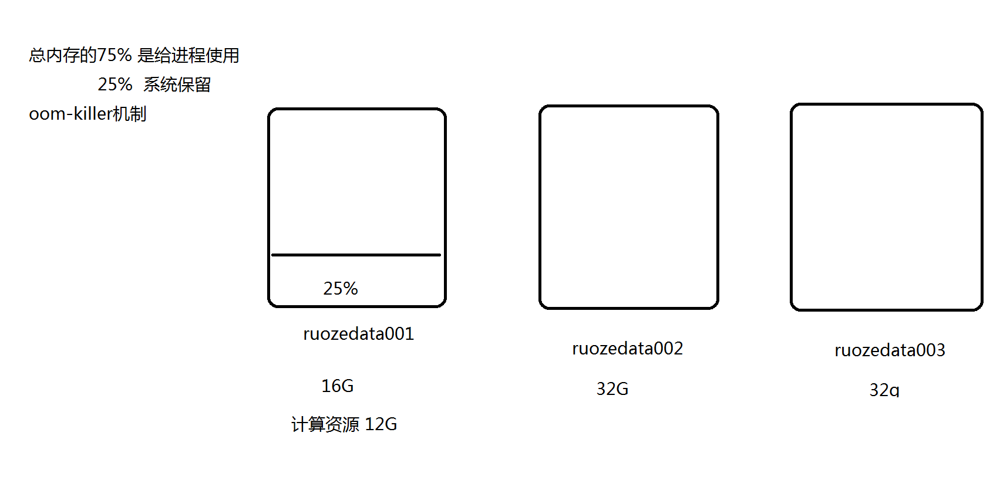
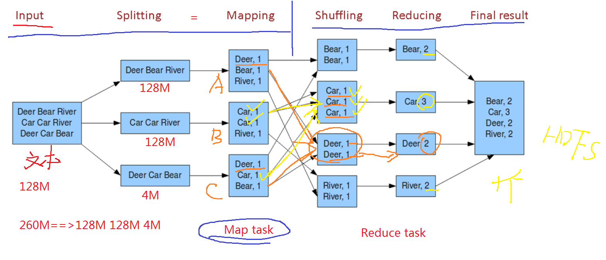

1.一种分布式计算框架 ，生产开发复杂累赘 基本不用
- map：将一组数据按照规则 映射为一组，数据条数不会发生变化
相当于sql中 select key + ‘value’ - reduce：归约 汇总，数据条数会发生变化
相当于sql中 group操作 - shuffle： 洗牌，根据key将不同机器上的数据进行网络传输规整到一起，按规则计算
注意：能不shuffle的就不要shuffle，shuffle会拉长计算的时间
2.MapReduce2.x 架构设计，mr on yarn提交流程 ，yarn的架构设计
-
container：容器，虚拟的概念，是运行在nm进程所在的机器上，是一组memory+cpu vcore资源的组合
在内存够的情况下，适当增加cpu vcore带来计算效率的提升- oom-killer机制：当Linux服务器某个进程使用内存超标 Linux机器为了保护自己，
主动杀死你的进程，释放内存。
所以系统要预留大约25%的内存供系统及其他组件使用防止oom-killer

- oom-killer机制：当Linux服务器某个进程使用内存超标 Linux机器为了保护自己，
-
架构：主从

- 主：
- Resourcemanager简称rm
- ApplicationsManager：应用管理器 作业 程序
- ResourceScheduler：资源调度器
- 从：
- NodeManager简称nm
-
client向rm提交应用程序（jar） 其中已经包含ApplicationMaster主程序和启动命令
-
ApplicationsManager 会为job分配第一个container，运行ApplicationMaster
-
Applicationmaster向 ApplicationsManager注册，就可以做yarn的web界面看到这个job的运行状态
-
Applicationmaster采取轮询的方式通过【RPC】协议让ResourceScheduler，申请和领取资源（哪台nm 多个内存 多少cpu vcore）
总结：启动app master（应用的主程序），领取到资源 -
一旦app master拿到资源列表，就和对应的nm进程通信，要求启动的任务task 计算代码
-
NM为任务设置好运行环境(container容器 包含jar包等资源) ，将任务启动命令写在一个脚本里，并通过该脚本启动任务task
-
各个任务task通过【rpc】协议向app master汇报自己的进度和状态，以此让app master随时掌握task的运行状态。
当task运行失败，会重启任务。 -
当所有task运行完成后，app master向 apps manager申请注销和关闭作业
这时在页面看 是不是完成的 完成的是成功还是失败的
总结：运行任务，直到任务完成。
- 主：
-
WordCount计算流程介绍

-
在进行map计算之前，mapreduce会根据输入文件计算输入分片（input split），
每个输入分片（input split）针对一个map任务，
输入分片（input split）存储的并非数据本身，
而是一个分片长度和一个记录数据的位置的数组，
输入分片（input split）往往和hdfs的block（块）关系很密切，假如我们设定hdfs的块的大小是64mb，
如果我们输入有三个文件，大小分别是3mb、65mb和127mb，
那么mapreduce会把3mb文件分为一个输入分片（input split），
65mb则是两个输入分片（input split）而127mb也是两个输入分片
（input split），-
5个分片 5个maptask
-
块大小有关 还和文件个数有关
-
换句话说我们如果在map计算前做输入分片调整，
例如不合并小文件，那么就会有5个map任务将执行，
而且每个map执行的数据大小不均，
这个也是mapreduce优化计算的一个关键点。
-